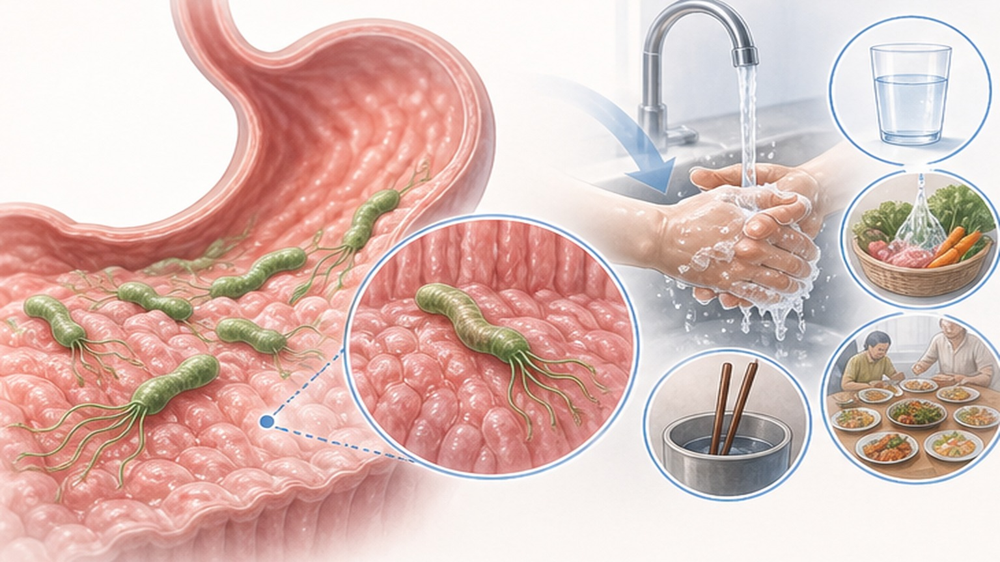
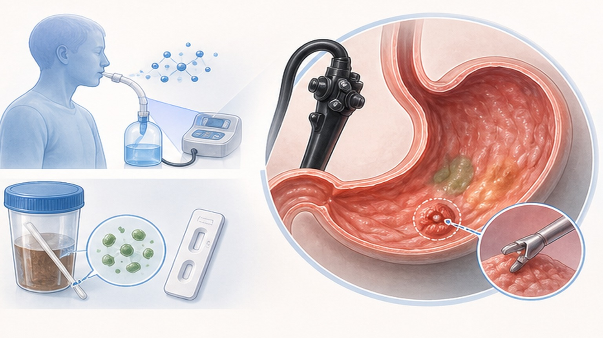
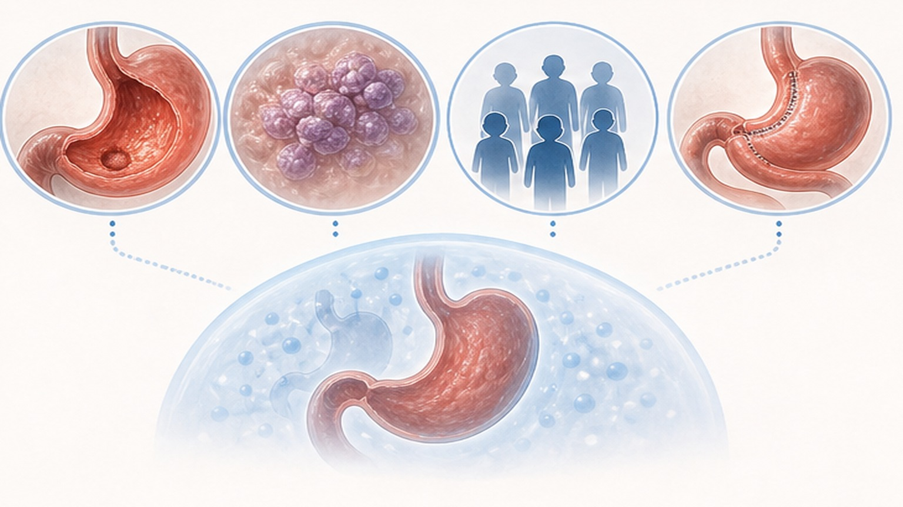
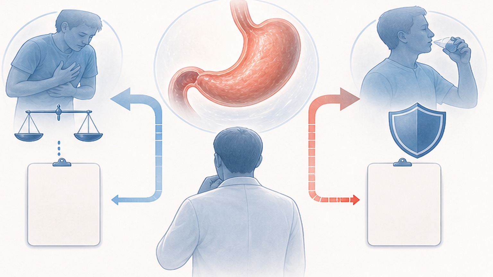

헬리코박터 파일로리
개요·진단 안내
감염 의미, 내시경 소견, 진단검사, 치료 필요성을 한 번에 정리합니다
한국 성인 약 3명 중 1명이 감염
위생 환경 개선으로 줄었지만 여전히 흔한 감염 — 그러나 대부분은 무증상
헬리코박터 파일로리란 (Helicobacter pylori)
강한 위산 속에서 살아남는 유일한 세균 — 위 점막에 평생 자리잡습니다
H. pylori는 요소분해효소(urease)로 자신을 둘러싼 위산을 중화시키며, 나선형 모양과 편모로 위 점막 깊숙이 파고듭니다.
한 번 감염되면 자연 소실되지 않고 평생 지속되며, 만성 염증을 통해 다양한 위장 질환의 시발점이 됩니다. 특히 CagA 양성 균주는 위 상피세포에 직접 단백질을 주입해 발암 과정에 관여하며, 한국·일본 동아시아 균주의 대부분이 CagA 양성으로 알려져 있습니다.
어떻게 감염되나요
대부분 어린 시절 가족 내에서 감염되며, 성인 간 전염은 드뭅니다

감염 후 어떻게 진행되나요
대부분 무증상이지만, 일부에서 위암으로 이어지는 Correa cascade를 따릅니다
내시경에서 어떤 모습으로 보이나요
CLO 검사만이 아니라 점막 모양도 감염의 힌트를 줍니다
어떻게 진단하나요
검사는 침습 유무에 따라 나뉩니다 — 한국에서는 내시경 시 동시 진단이 일반적

반드시 제균 치료가 필요한 경우 (Definite)
대한 헬리코박터학회 가이드라인 — 강력 권고 적응증

선택적으로 고려하는 경우 (Conditional)
의학적 이득과 부담을 함께 고려해 환자와 상의 후 결정합니다
검사를 권하는 경우 vs 권하지 않는 경우
"검사 후 치료(test-and-treat)" 원칙 — 치료할 의사가 있을 때만 검사합니다
- 위·십이지장 궤양이 발견됐을 때
- 가족 중 위암 환자가 있을 때
- 위축성 위염·장상피화생 진단 시
- 아스피린·NSAIDs 장기 복용 + 궤양 병력
- 원인 불명 철결핍성 빈혈·ITP
- 조기 위암 절제 후 추적
- 증상이 전혀 없는 일반 건강인
- 위장 증상이 가볍고 일시적일 때
- 치료 의사가 없는 경우 (검사 무의미)
- 임신 중·급성기 활동성 출혈 시
- 최근 PPI·항생제 복용 직후 (위음성 위험)
- 매우 고령에서 기대 수명이 짧은 경우

제균 치료의 큰 그림
단계별 항생제 치료 — 자세한 약물·주의사항은 별도 "제균 치료 안내" 자료 참조
PPI + 항생제 2~3종을 10~14일간 복용하는 단계적 치료 — 1차 실패 시 2차, 그래도 실패하면 감수성 검사 기반 3차로 이행합니다.
치료 종료 후 최소 4주 경과 후 요소호기검사(UBT) 또는 분변 항원검사로 제균 여부를 확인합니다. 성공의 가장 큰 변수는 복약 순응도 — 한 알도 빼먹지 않고 끝까지 복용하는 것이 핵심이며, 자가 중단은 항생제 내성을 만들어 다음 치료까지 어렵게 합니다. 치료 기간 동안 금주는 필수입니다 (메트로니다졸 + 알코올 = 안타뷰스 반응).
오늘 꼭 기억할 7가지
감염·진단·치료 결정의 핵심 원칙입니다
자주 묻는 질문
검사·치료 결정을 앞두고 가장 많이 묻는 내용을 정리했습니다
건강한 위,
건강한 삶
검사·치료·관리에 대해 궁금한 점이 있으시면 언제든 문의해 주세요
광교중앙로 298, 4층
5대암 검진
같은 자료를 다시 볼 수 있어요